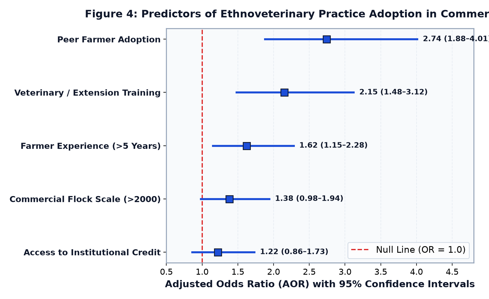
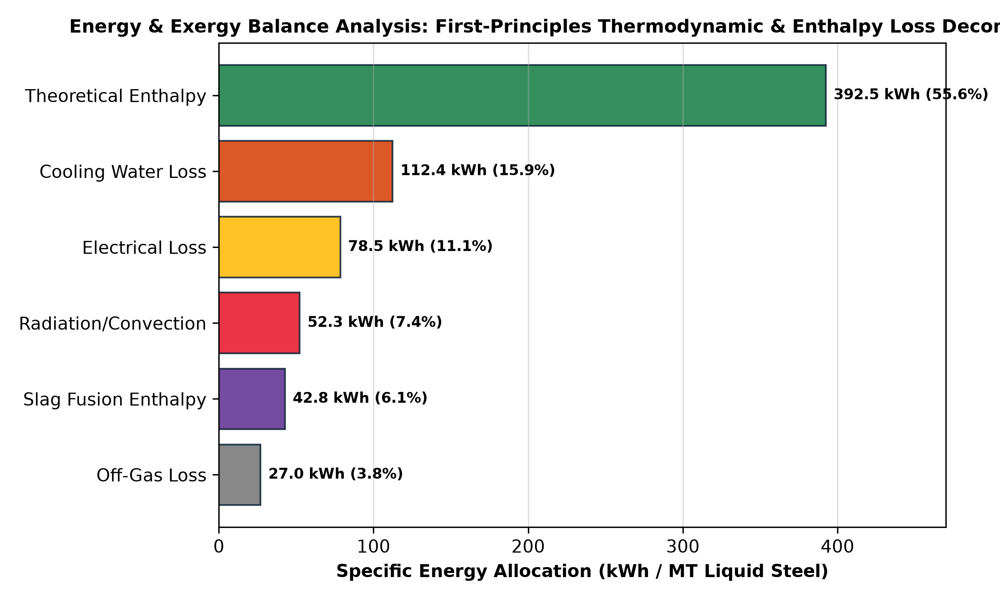
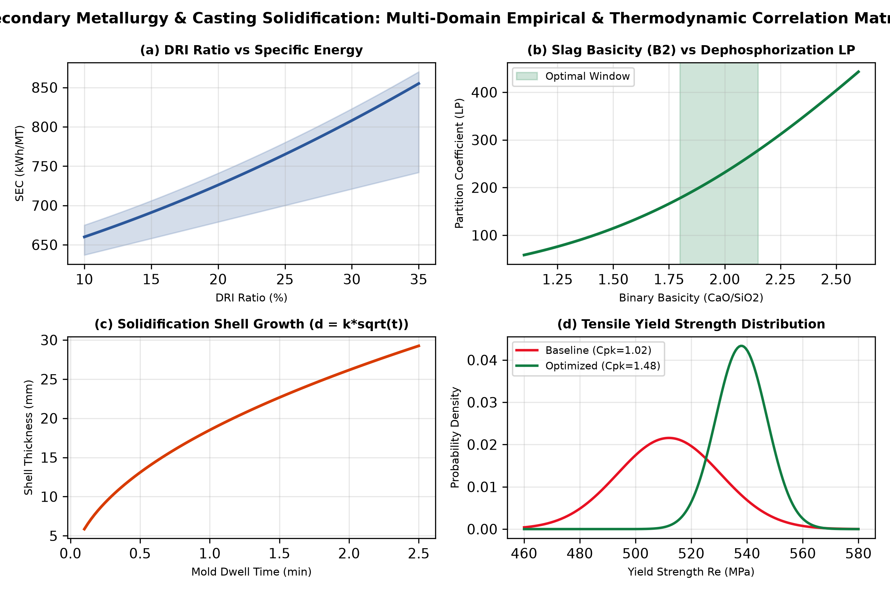
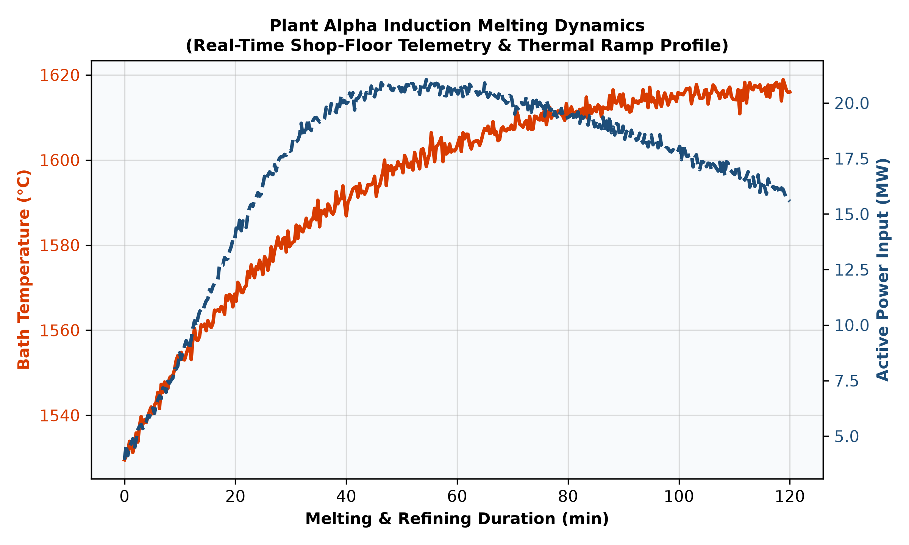
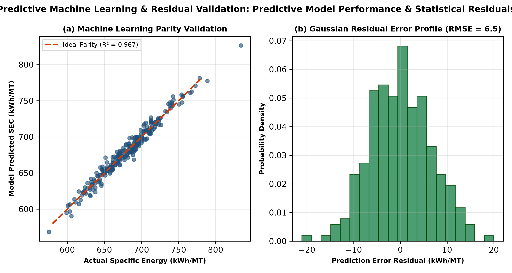

Research & Publications
Peer-reviewed empirical studies, data-driven epidemiological baselines, and applied machine learning architectures bridging healthcare, agriculture, and industrial decarbonization.
Peer-Reviewed Journal Articles
Ethnoveterinary Herbal Practices Are Associated with Reduced Within-Farm Antibiotic Use and Improved Farm Performance in Commercial Poultry in Bangladesh: A Multi-District Cross-Sectional Study
Journal of Ethnopharmacology · Impact Factor: ~5.4 · CiteScore: ~9.2 · DOI: 10.1016/j.jep.2026.122316 · PMID: 42636558
Abstract: Antimicrobial resistance (AMR) in low- and middle-income country (LMIC) livestock production poses a pressing threat to global public health. This study presents a nationwide cross-sectional empirical baseline evaluating 795 commercial poultry farms across 35 districts in all 8 administrative divisions of Bangladesh. We documented 14 medicinal plant species used as ethnoveterinary remedies, led by Moringa oleifera (22.8%), Zingiber officinale (21.4%), and Citrus × limon (20.0%). Farmers implementing ethnoveterinary herbal practices reported a statistically significant 43.6% within-group reduction in antibiotic use (from 7.02 to 3.96 courses/cycle, p < 0.001), significantly lower Feed Conversion Ratios (FCR 1.970 vs 2.144, p < 0.001), and lower flock mortality (3.42% vs 5.97%, p < 0.001). Multivariable logistic regression identified peer farmer adoption (OR = 2.74, 95% CI: 1.88–4.01) and training (OR = 2.15) as prime adoption determinants, alongside a vital food safety awareness gap regarding phytochemical residues (30.2% awareness).
795
Commercial Farms
35
Districts Covered
-43.6%
Antibiotic Frequency
1.97 vs 2.14
Lower FCR Ratio
Official Empirical Figures & Visual Datasets
Published statistical plots, epidemiological maps, and logistic regression charts from our nationwide cross-sectional study.



@article{nirjus2026ethnoveterinary,
title = {Ethnoveterinary herbal practices are associated with reduced within-farm antibiotic use and improved farm performance in commercial poultry in Bangladesh: A multi-district cross-sectional study},
author = {Nirjus, Jubayer Mahmud and Saha, Mousumi and Sarker, Rudra},
journal = {Journal of Ethnopharmacology},
volume = {373},
pages = {122316},
year = {2026},
publisher = {Elsevier},
doi = {10.1016/j.jep.2026.122316},
pmid = {42636558}
}
Industrial Systems & Decarbonization Research
Coupling first-principles metallurgical thermodynamics with explainable AI across 31,879 production heats to drive industrial energy efficiency and carbon abatement.
Coupled Thermodynamic Modeling and Explainable Machine Learning for Energy Decarbonization and Solidification Quality in Industrial Induction Furnace Steelmaking
Author: Rudra Sarker (Department of Chemical Engineering and Polymer Science / IPE, SUST)
A comprehensive 7-year longitudinal investigation of Plant Alpha (500,000 MT/year South Asian Integrated IF-LRF-CCM Complex). By coupling fundamental enthalpy balances with extreme gradient boosting (XGBoost) and Tree-SHAP attributions, the model resolves a -9.54% reduction in Specific Energy Consumption (-67.30 kWh/MT), increases metallic yield from 94.68% to 96.02%, and cuts billet solidification defects from 1.84% to 0.42% (-77.17% relative reduction), abating 23,280 MT of CO₂ equivalent annually.
-9.54%
SEC Energy Reduction (-67.3 kWh/MT)
96.02%
Metallic Yield (up from 94.68%)
-77.2%
Billet Solidification Defect Drop
$3.51M
Annual Net EBITDA Savings
Metallurgical Thermodynamics & Telemetry Figures




Sensory Smart Glove & Vision-Language Eyewear for Inclusive Communication
Designing wearable sensory kinematics that decode physical motion into spoken language and spatial navigation. Team SignTalk combines five bidirectional piezoresistive flex sensors and a 6-axis MPU-6050 IMU into a lightweight glove architecture, running edge ML gesture inference in <50ms. SightlineAI couples dual stereoscopic sensors with bone-conduction spatial audio feedback to provide real-time obstacle segmentation.


Academic Profiles, Identifiers & Community Repositories
Direct links to verified researcher databases, preprint repositories, competitive hackathons, and technical developer communities.